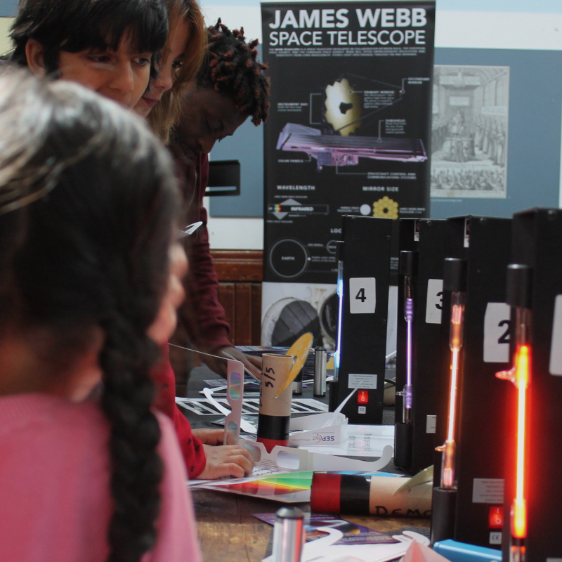

In Detail
Our proposal is for an innovative and interactive science & technology discovery centre to be built in Brighton at the Black Rock sea-front site by the marina, called the Brighton Luminarium.
The theme of the Brighton Luminarium is Light. It will be an unique attraction that will showcase Brighton with innovative architecture, exhibits and interactives. Inside, visitors will discover the stories of local Victorian pioneer inventors (such as Magnus Volk who introduced electric lighting to the Royal Pavilion in 1883, and others who developed cinematic projection), how the quantum nature of light creates the colours that we see every day (and how that is being used to develop the next generation of ultra-fast quantum computers in Brighton), and how astronomers study distant light to understand our place in the Universe.
An overview of the proposal is also available as:
- A 12-page document outlining the proposal [available as a PDF document].
- A brief 8-slide overview of the proposal [available as a PDF document].
|  |
|
Visitors to the Lewes STEM fair exploring the variety of rainbows of light emitted by different gases. |
The centre will contain a range of hands-on exhibits for visitors to interact with, developed by experts from the Volk’s Electric Railway Association, academics at the Department of Physics & Astronomy at the University of Sussex (which has a well-established outreach program run by members of the Brighton Luminarium team), and constructed by Science Projects Ltd, a non-profit organisation whose interactive award-winning exhibits are in science centres around the world.
| |
|
Volk's Electric Railway has been operating along Brighton's sea front for 140 years! |
The Pioneer zone will be the first stage in the journey of discovery, exploring the achievements and legacy of the Victorian inventors of Brighton and Hove that have helped change our world along the theme of light.
Arguably the most famous is Magnus Volk (1851-1937), whose railway has been travelling along Brighton’s sea front for 140 years! Having opened in 1883, it is the oldest working electric railway in the world, and would serve to link the Brighton Luminarium at Black Rock with the popular attractions of the Aquarium and Palace Pier, and there is the possibility of having an integrated station within the Brighton Luminarium itself, allowing visitors to disembark directly into the centre. Volk also built the Brighton and Rottingdean Seashore Electric Railway that ran from 1896 to 1901 (the remains of the track can still be seen at low tide) and introduced electric lighting to Brighton's Royal Pavilion in 1883.
Inside the Pioneer Zone, visitors will marvel at the works of local Victorian inventors, with exhibits including telephones, X-ray machines, railways, fire alarms, electric cars, photography, colour film and projection, and many others. An array of clocks made by local clockmakers will show times in different parts of the world, while simulators will allow children to drive a Volk’s railway train, use early telephones, fire alarms and early projectors.
| |
|
The Milky Way visible over Castle Hill on the edge of the Brighton in the South Downs National Park. |
The Astronomy zone will explore how astronomers study light to understand our place in the Universe, and will be dominated by a large planetarium surrounded by exhibition space. Planetaria are unique and popular cinema-like domes onto which views of the stars and planets are projected, allowing visitors to be taken on immersive journeys through space, and are usually the most profitable part of any science centre. While exploring our universe remains the most popular topic, the flexibility of modern digital projectors allows a vast range of subjects to be explored, such as the microscopic world of human cells or even visualising dinosaurs! These domes are often called “digital theatres” to reflect on how artists worldwide are using planetarium domes as a novel digital canvas.
Throughout the Astronomy zone, visitors will be presented with the latest astronomical discoveries and stunning images of our Universe, developed by education experts at both the Department of Physics & Astronomy at the University of Sussex and the Observatory Science Centre (site of the former Royal Greenwich Observatory) in nearby Herstmonceux. A display of historical astronomical instruments loaned from the Observatory Science Centre will ensure a seamless connection from the Pioneer Zone into the Astronomy Zone.
The planetarium itself will be constructed in the shape of a buckyball, to recognise the discovery of the football-shaped carbon-60 molecule at the University of Sussex in 1985 by Sir Harry Kroto, another local pioneer, who received the 1996 Nobel Prize in Chemistry for this work. Developing novel applications for carbon-60 is an active area of research worldwide.

|
|
Physicists at the University of Sussex using lasers to develop quantum technologies. |
The Quantum zone will be the world's first quantum museum, where visitors will explore how the quantum nature of light creates the colours that we see all around us, and how our understanding of light is allowing the next generation of ultra-fast quantum computers to be developed in Brighton. This Zone will contain a Quantum arcade, where modern arcade-style games will introduce quantum physics to visitors in a fun and engaging way.
The inclusion of a quantum museum is motivated by the world-leading research being carried out in quantum physics in Brighton at both the University of Sussex and local company Universal Quantum, where scientists have developed a range of quantum sensors with health and security applications, and are developing the technology needed for the next generation of ultra-fast quantum computers. This zone will explore the potential of this futuristic technology, showcasing the latest innovations. Appreciating that light exists beyond what is visible to the human eye is also part of the GCSE school syllabus, and interactive exhibits (such as thermal cameras) will allow children to see such invisible forms of light.

|
|
Harry Kroto was awarded the Nobel Prize for Chemistry in 1996 for discovering fullerenes (molecules of carbon atoms in the shape of a football) at the University of Sussex in Brighton. |
Stories of significant people will be told throughout these key zones, to engage with visitors and inspire the next generation. Not only will visitors learn about the Victorian pioneers and scientists of the past, but through a variety of public events, they will also get the opportunity to meet the astronomers, engineers and quantum physicists of the present, who are making new discoveries here in Brighton. Stories will be told of the scientists and inventors from a diverse range of genders, ethnicities, ages, disabilities and backgrounds, providing role models to all visitors, no matter what their background.
Classrooms for school visits will be included in the centre, as school and other educational groups from Brighton and beyond will make up a significant number of visitors. A programme of events will be developed and delivered to schools which will be closely linked to the school syllabus. Out of school hours (evenings, weekends, and school holidays), the classrooms will be used for adult evening courses, as indoor public performance spaces, or hired out for corporate or community functions.

|
|
Families enjoying the outdoor interactive exhibits at the Observatory Science Centre in Herstmonceux, where children use play to investigate a range of concepts. |
|
The remains of the track of the Brighton and Rottingdean Seashore Electric Railway, a coastal railway that ran from 1896 to 1901. |
An outdoor children’s interactive exhibit area consisting of large, physical, hands-on activities, will encourage children to explore scientific themes through play. The Observatory Science Centre in Herstmonceux has an outdoor interactive childrens area, and they are known to encourage repeat visits.
Additional exhibition & performance spaces will also form part of the Brighton Luminarum, both outside and in. These will enable a variety of visiting exhibitions to be publicly displayed, covering both arts and science (such as photographic exhibitions or open-air theatre) that can be updated on a regular basis to encourage repeat visitors at minimal cost.
The centre will be fully accessible to visitors who have a wide variety of additional needs, such as those with limited mobility, impaired sight or hearing, with a changing places toilet facility provided. Dedicated quiet opening hours will provide a calm and relaxed environment for those (especially children) with sensory sensitivities.
Landscaping around the centre will be sensitive to the natural environment, with light pollution minimised. A café offering sea views with outdoor seating would become a destination in its own right, and the centre will include a shop selling relevant toys and gifts, as well as toilet facilities. Both the shop and café will be positioned so that they are readily accessible to all visitors to the area, especially those attending motor vehicle rallies, the marathon, London to Brighton cycle rides and other events regularly held on Madeira Drive.
Indicative Architectural plans (below) have been drawn up by out friends at ABIR Architects showing how the Brighton Luminarium might look at the Black Rock site.
{kind=link}